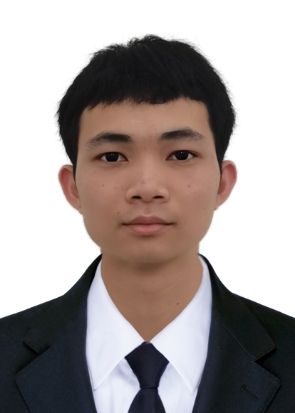

Yexiong Lin 林业雄Ph.D. |
 |
I received my Ph.D. in Computer Science from the University of Sydney (USYD) in 2026, advised by Prof. Tongliang Liu. I received my bachelor's degree in Communication Engineering from Hunan University in 2022. My research interests include trustworthy and causal machine learning, generative models, agentic AI, and machine learning systems, as well as applications of machine learning to scientific and engineering problems.
Ph.D. in Computer Science, 2023.03 - 2026.08
The University of Sydney, Australia, advised by Prof. Tongliang Liu
B.Eng. in Communication Engineering, 2018.09 - 2022.06
Hunan University, Changsha, China
SquidAgent: Parallelize Wisely, Coordinate Efficiently.
Yexiong Lin, Shanshan Ye, Yu Yao, Zhen Fang, Bo Han, Tongliang Liu.
NeurIPS, 2026.
Beyond Optimal Transport: Model-Aligned Coupling for Flow Matching.
Yexiong Lin, Yu Yao, Yang Zhou, Tongliang Liu.
Findings of CVPR, 2026.
Do We Need to Penalize Variance of Losses for Learning with Label Noise?
Yexiong Lin, Yu Yao, Yuxuan Du, Jun Yu, Bo Han, Mingming Gong, Tongliang Liu.
JMLR, 2026.
Improving the Instance-Dependent Transition Matrix Estimation by Exploiting Self-Supervised Learning.
Yexiong Lin, Yu Yao, Zhaoqing Wang, Xu Shen, Jun Yu, Bo Han, Tongliang Liu.
TPAMI, 2025.
Learning the Latent Causal Structure for Modeling Label Noise.
Yexiong Lin, Yu Yao, Tongliang Liu.
NeurIPS, 2024.
CS-Isolate: Extracting Hard Confident Examples by Content and Style Isolation.
Yexiong Lin, Yu Yao, Xiaolong Shi, Mingming Gong, Xu Shen, Dong Xu, Tongliang Liu.
NeurIPS, 2023.
SubFlow: Sub-mode Conditioned Flow Matching for Diverse One-Step Generation.
Yexiong Lin, Jia Shi, Shanshan Ye, Wanyu Wang, Yu Yao, Tongliang Liu.
arXiv, 2026.
International Conference on Machine Learning, Top Reviewer Award (top 2% of reviewers), 2025.
The Second Prize of Undergraduate Electronic Design Contest - 2020 Embedded System Design Invitational Contest (Intel Cup), 2020.
| © Yexiong Lin | Last update: October 2026 |